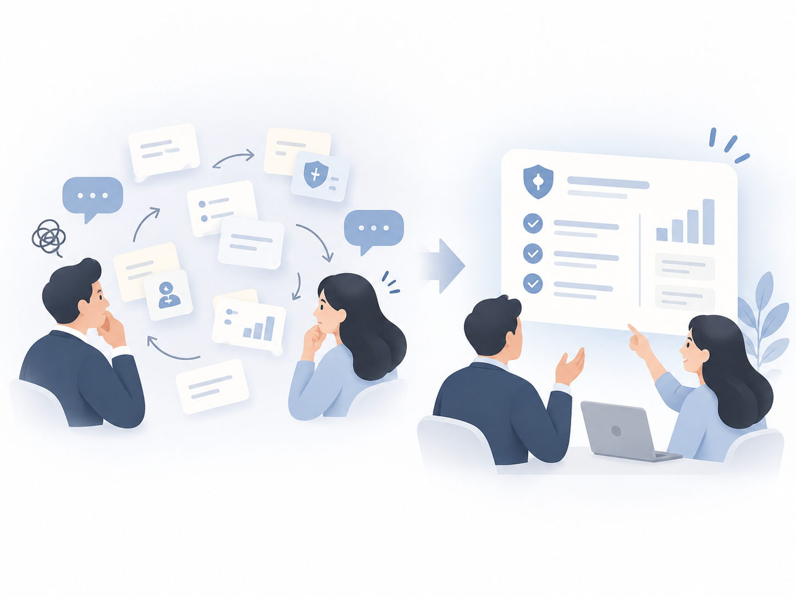
No shared starting point
Without a shared template, clients struggled to articulate requirements and Sales had to repeatedly confirm the direction.
The team initially wanted a standard flow to speed up delivery. Through interviews and delivery reviews, I found the real bottleneck was deciding what should stay fixed and where flexibility was necessary. I created a delivery model based on templates and controlled modularity so requirements could converge faster and design and engineering could reuse existing work.
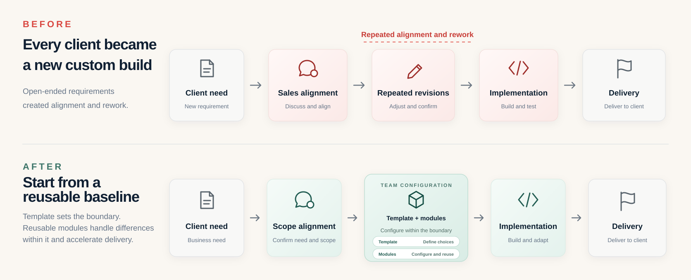
The platform had opened many adjustable elements to support different insurance products and brands, but had not defined what could change and what should remain shared. Each new client therefore required another round of scope definition, while Design and Engineering struggled to reuse existing work.
I interviewed Sales, Product, and Engineering and reviewed past alignment and delivery records. Three recurring problems emerged:

Without a shared template, clients struggled to articulate requirements and Sales had to repeatedly confirm the direction.
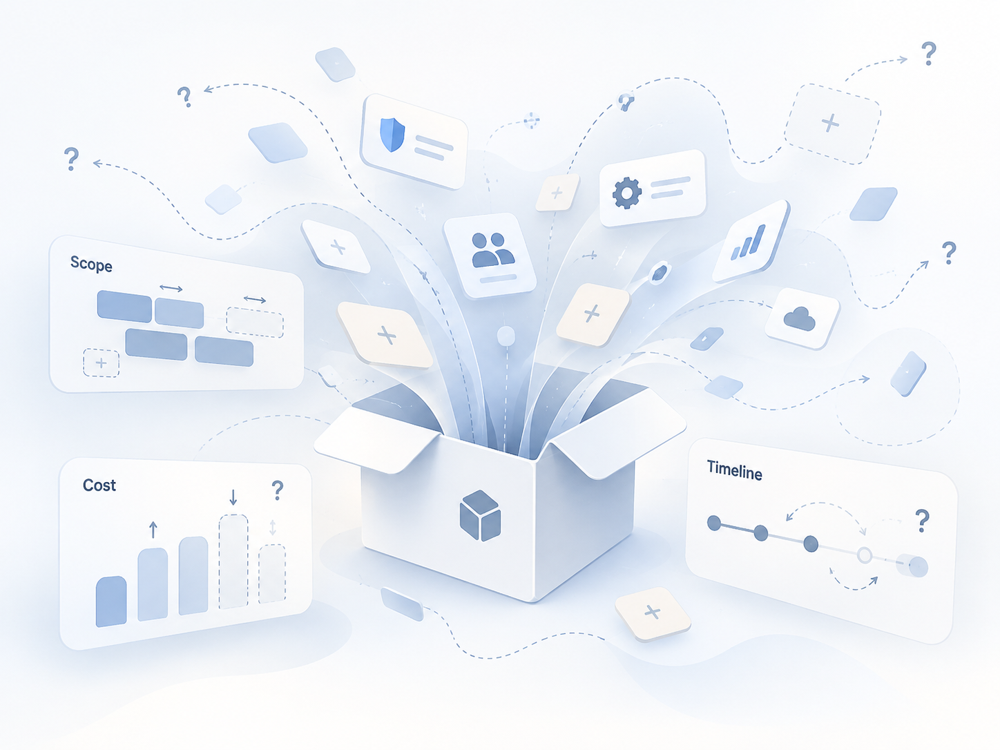
Without a defined configuration boundary, the team could not quickly tell what was reusable and what required additional development.
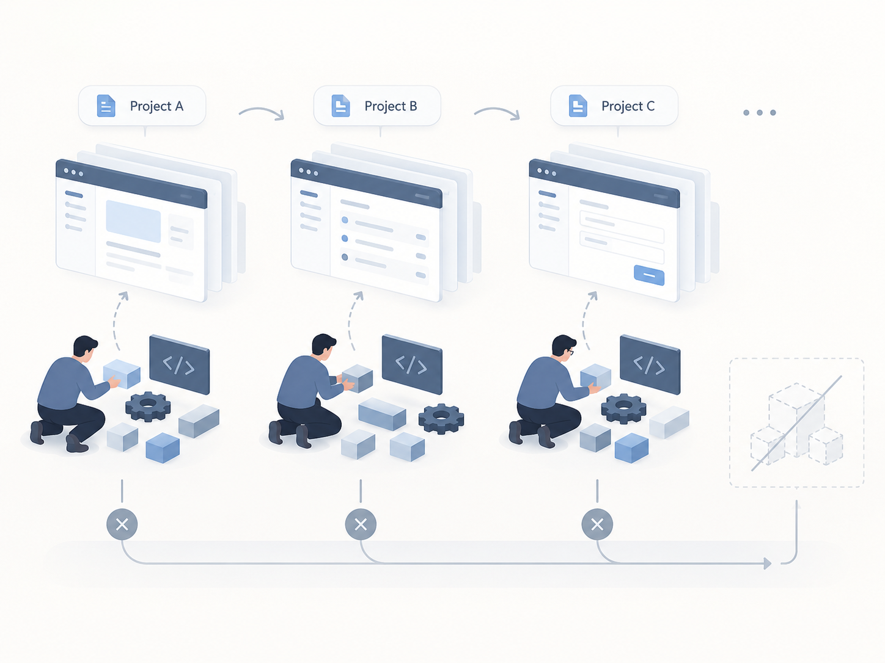
Every engagement required another design, estimate, and build, so prior work rarely became reusable delivery assets.
The team hoped a standard flow would shorten delivery, but interviews and delivery reviews showed the recurring issue was not insufficient standardization. The unanswered question was what should stay fixed and what could vary by client.
I split the problem into two decisions: choose the delivery model first, then define the template’s configuration boundary.
Preserve the core experience through a baseline,
and turn only predictable differences into bounded configuration.
Defines the choice set so requirements no longer start from a blank page.
Uses a baseline with predefined positions where limited options can be inserted, replaced, or enabled.
Customization was not removed; it was tiered.
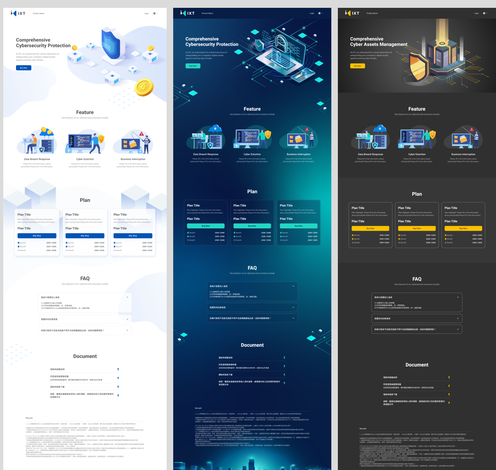
Conversations shifted from repeatedly defining scope to converging around concrete options.
This was not measured with precise time tracking.Open too much and the team still redesigns case by case; open too little and the product cannot support necessary brand and business differences.
I inventoried the interface elements with Product and Engineering, then classified differences into three levels: configurable, bounded, and locked.
Brand expression can change within defined rules without altering the product's core structure.
Compose from designed modules and options; do not redesign them.
The rules required for flow comprehension, interaction consistency, and delivery reuse remain shared.
I led the template + controlled modularity direction and defined the configuration boundary with Product and Engineering.
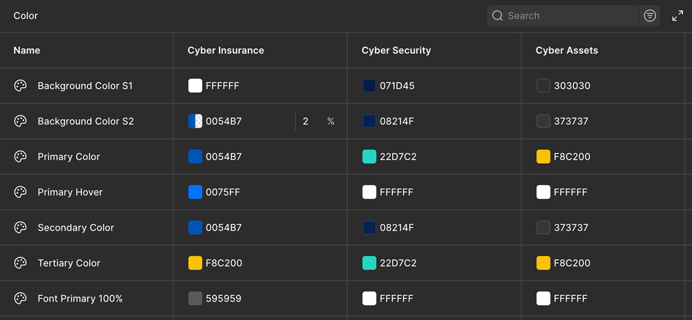
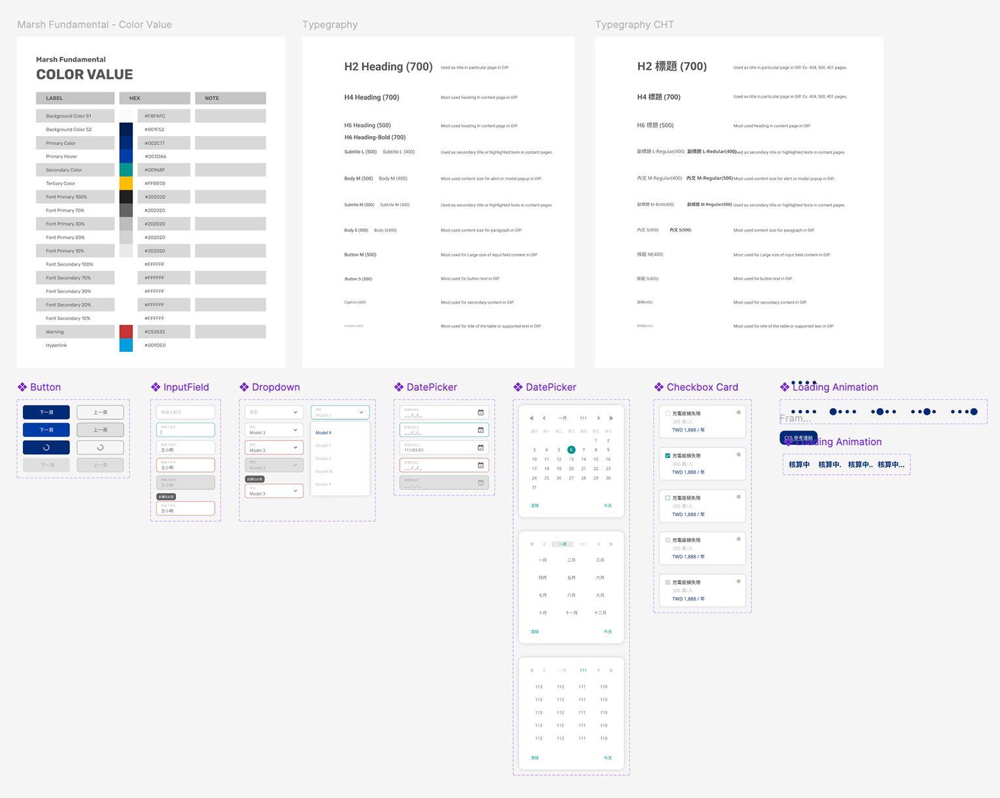
Once the boundary and shared rules were established, new clients no longer started from a blank design.
Two interaction questions remained: how to keep mandatory regulatory information accessible without interrupting the application, and how to divide a complex form into clear tasks.
Insurance partners required regulatory content to be prominent, but full legal copy could overwhelm the primary application task.
Keeps required information accessible without interrupting the application flow.
Shows the full content, but removes users from the current context and can obstruct the main screen on mobile.
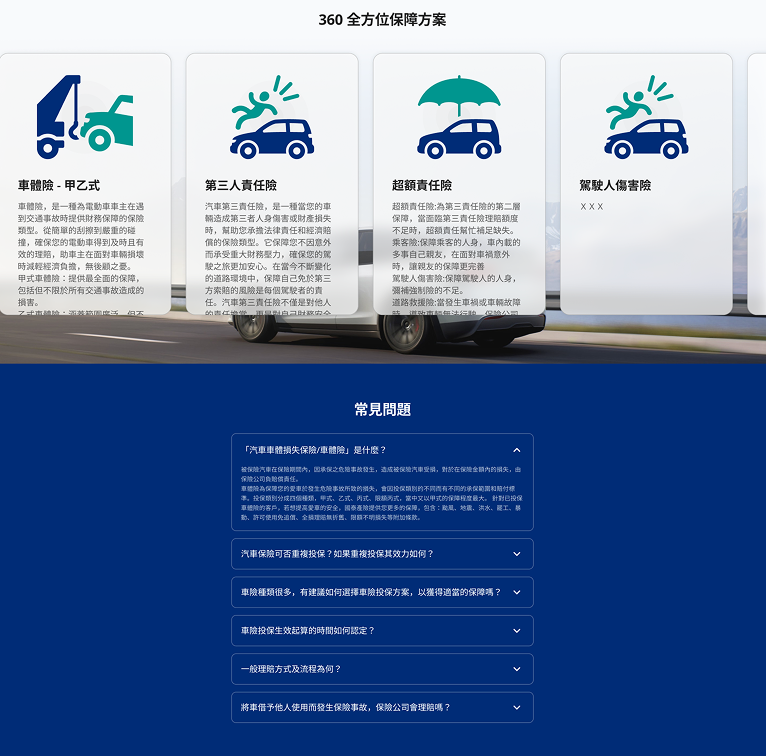
Identity details, plan selection, documents, and declarations appeared on one long page.
I reviewed common insurance application flows and interviewed colleagues with car-insurance purchase experience to understand the actual journey.
I grouped information by task—personal details, plan selection, documents and declarations, then review and payment—so each step focused on one primary task.
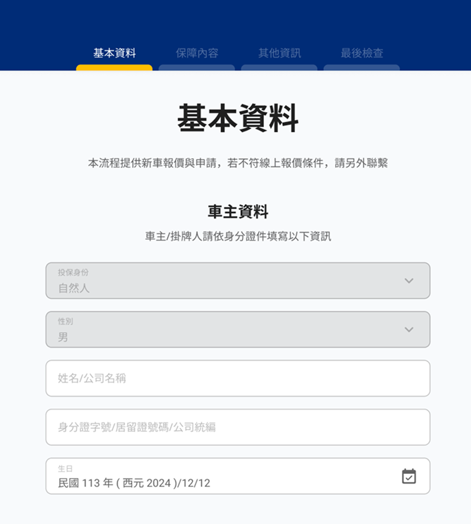
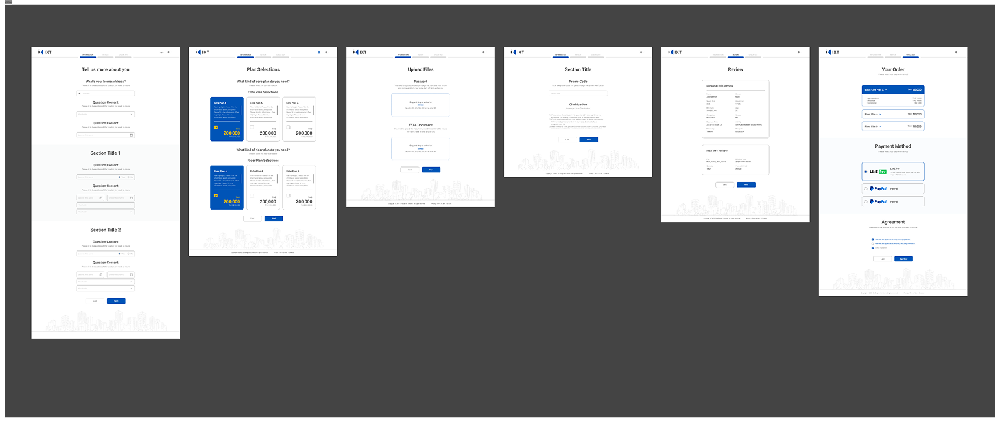
The framework is being applied across three ongoing enterprise engagements. Each adapts brand and plan content within the defined configuration boundary while keeping the core flow and components unchanged.
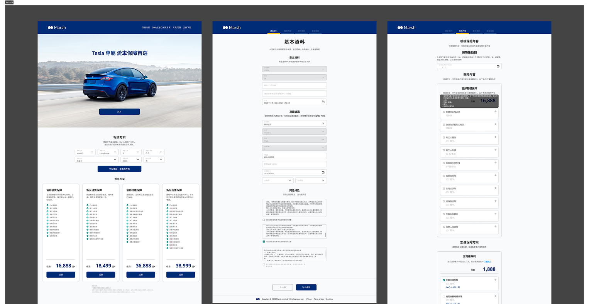
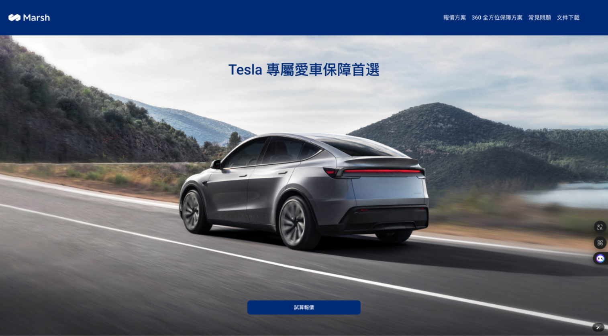
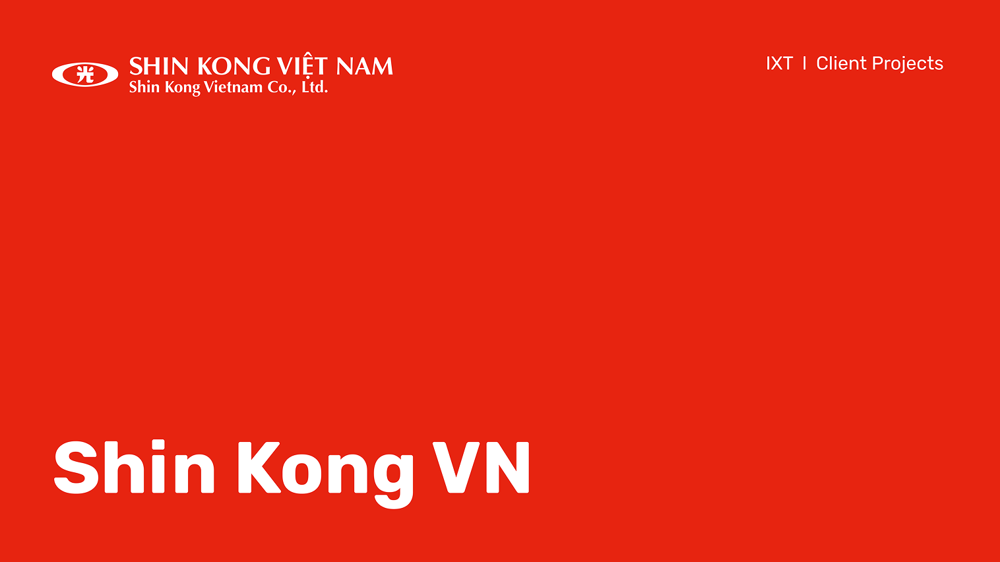
These outcomes compare staffing and timelines before and after the framework—not behavioral outcomes from the later UX improvements.
Engineering + Design effort compares staffing before and after the framework. The end-to-end delivery timeline comes from the same internal before/after comparison; design adaptation time compares actual designer working time. All three enterprise engagements are ongoing.
I would be glad to hear what the team is trying to understand, align, or move forward.
Contact me ↗ nekoking2010@gmail.com Return to homepage